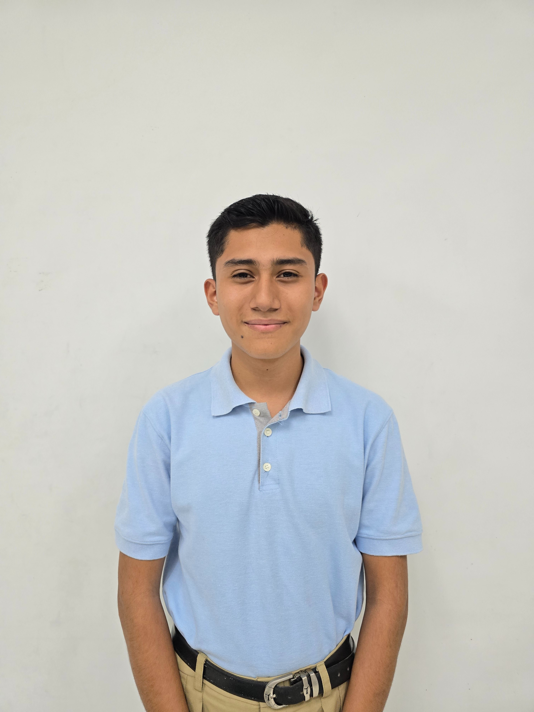

Un recorrido por mis 3 años de aprendizaje en Inglés, Informática y Valores.

¡Hola! Mi nombre es Steven Escobar. Soy estudiante del programa ¡Supérate! y durante tres años he tenido la oportunidad de crecer en las áreas de inglés, informática y valores.
¡Supérate! fue un totalmente inesperado, fue una oportunidad que me cambio la vida, cuando entre al programa pensé que iba a aprender Inglés, Informática y Valores pero aunque si esas eran las materias básicas aquí he aprendido mucho más, aprendí trabajo en equipo, aprendí a conocerme a mí mismo, a trabajar y siempre dar la milla extra. ¡Supérate! tubo un impacto más grande de lo que yo esperaba, cambio mi perfil profesional pero también cambio mi perfil personal.
Quiero agradecer a el Programa Empresarial ¡Supérate! por convertirme en lo que soy, gracias por transformar vidas via Educación. Gracias al staff debtrabajo del centro, quienes siempre me motivaron a esforzarme y dar lo mejor de mi cada día. Finalizo dando gracias a mis compañeros por ser parte de este viaje en donde todos crecimos y aprendimos.
En este portafolio podrán ver un poco de todo lo que viví en cada materia durante los tres años, es difícil mostrar todo lo aprendido en una página web pero si dejo algunas de las vivencias más importantes.
Resiliencia
Superación
Honestidad
Puedes visualizar o descargar mi currículum en formato PDF.
Ver Currículum